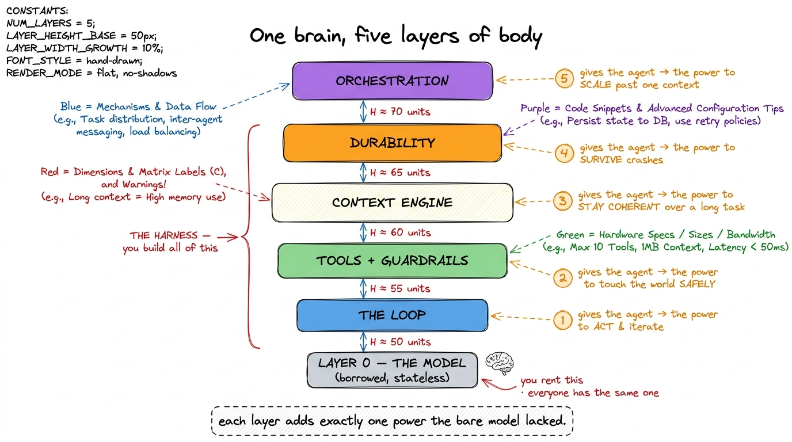
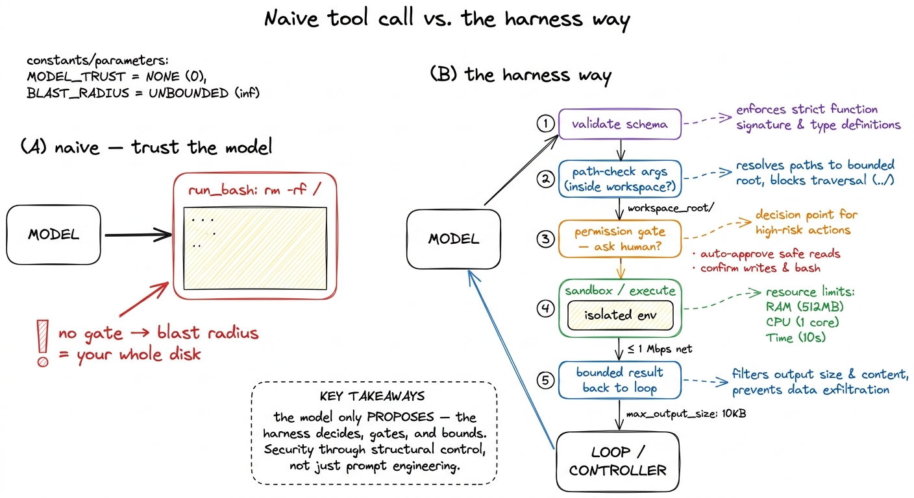
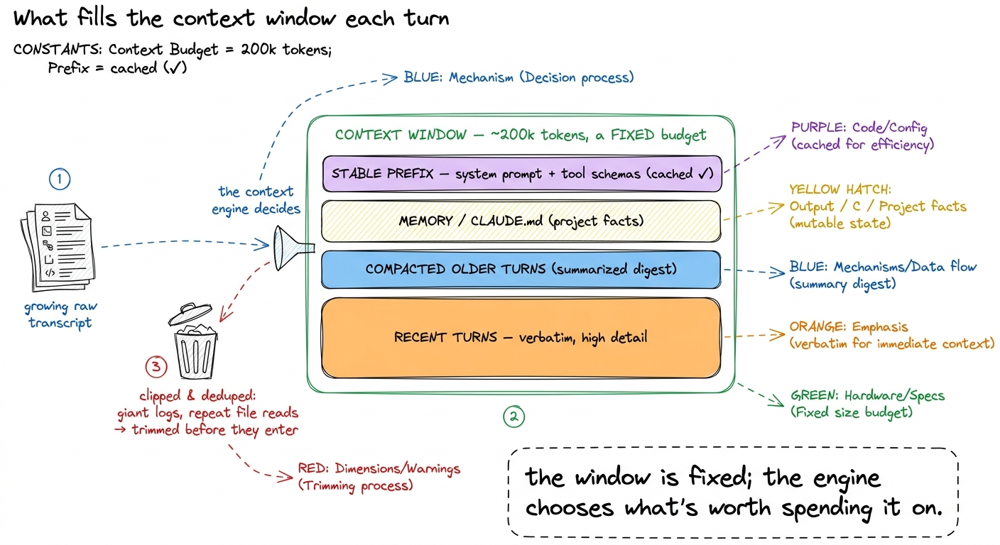
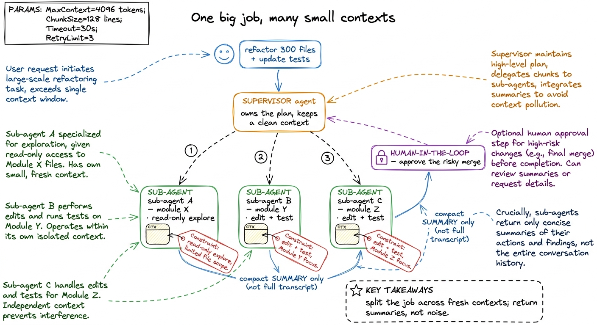

The anatomy: five layers of a harness MAP
In the last chapter I made a claim and asked you to feel it in your bones: Claude Code is not a model. It is a model with a body built around it — and that body is the harness. This chapter is the anatomy of that body. It is the map the entire book unfolds from, so it is worth reading slowly and keeping somewhere you can glance back at it. Every later chapter is a zoom-in on one region of the picture you are about to see.
Here is the shape of the whole thing in a single sentence: one borrowed brain at the bottom, five layers of body on top, and each layer hands the agent a power the bare model did not have. That's it. If you remember nothing else, remember the layer cake.
The one thing you don't build
Start at the bottom, because the bottom is the part you don't build — you rent it. The model is a stateless function: you pass it a list of messages plus a list of tools it's allowed to call, and it passes back one more message. No memory of the last call, no hands to touch a file, no clock, no way to run a command. We proved this in the last chapter and it stays true forever. Everything above this line is yours to engineer.1 This is the great equaliser of the field. You and Anthropic and the smallest startup all rent essentially the same frontier models. Nobody's competitive advantage lives at layer 0 — it all lives in the five layers above it, which is exactly why this book spends zero chapters teaching you to train a model and every chapter teaching you to wrap one.
So the bare model is capable but inert. The job of the harness is to take that inert function and grow it, one power at a time, into something that reads your repo, edits files, runs your tests, notices they failed, fixes the bug, and remembers the whole time what you asked. Five powers, five layers.

figure rendering · The map of the whole book: a borrowed stateless model, then five layerLet me walk up the stack. For each layer I'll name the power it adds, the smallest idea at its heart, and how real harnesses — Claude Code, pi, Cursor, Hermes — actually implement it. Then the rest of the book fills in each one.
Layer 1 — the loop: the power to act
A model answers once and stops. An agent keeps going until the job is done. The bridge between the two is a loop, and it is the single most important idea in the harness because it is where agency comes from.
The heart of it is almost embarrassingly small: call the model, check whether it asked to use a tool, run the tool if so, feed the result back, and repeat.
def run_agent(user_request):
messages = [{"role": "user", "content": user_request}]
while True:
reply = call_model(messages, TOOLS) # 1. ask the model
messages.append(reply) # remember what it decided
if reply.stop_reason != "tool_use": # 2. no tool → we're done
return text_of(reply)
results = run_tools(reply) # 3. run what it asked for
messages.append(results) # 4. feed results back
# 5. loop — the model now sees the results and decides againThe subtle, load-bearing detail is who decides when to stop. The loop runs as long as the model keeps asking for tools and ends the instant it produces a plain answer instead. The agent decides it is finished — not you. That inversion of control is the whole difference between an agent and a script, and it's why the loop, not the model, is Layer 1.2 Getting the stop condition wrong is how you build an agent that re-reads the same file forever. Real harnesses add a max-turns guard and an interrupt path on top of the model's own signal — we give stop conditions their own chapter. We build this from nothing in the agent loop from first principles and have a working bare harness by the end of your first bare harness.
What it buys you: an agent that plans, acts, and iterates on its own. What it still misses: those tools it's calling can do anything — including damage.
Layer 2 — tools and guardrails: the power to act safely
A loop that can only produce text is a chatbot. Layer 2 gives the agent hands: a read_file, a write_file, an edit, a run_bash. Each tool is a contract — a name, a description, and a JSON schema for its arguments — that teaches the model what it can do and exactly how to call it. That schema is not paperwork; it is how you teach the model to use the tool correctly, which is why we treat tool schemas as contracts as a subject in its own right.
But the moment you hand an autonomous loop a run_bash, you have handed it the power to run rm -rf. So guardrails are not an optional bolt-on — they are half of this layer. Every real harness gates dangerous actions the same way Raschka describes it: the model proposes a tool call, the harness validates it, path-checks the arguments, optionally asks the human for approval, then executes and feeds a bounded result back.

figure rendering · The difference between a demo and an agent you trust: the model proposThis gate is exactly what an approval mode is: permission gates and approval modes let auto-approve harmless reads while pausing on writes and shell commands, and sandboxing shrinks the blast radius so a bad call can't escape the workspace. This is the layer where a flashy demo becomes something you'd actually let loose on your repo.
What it buys you: hands, plus the safety to use them. What it still misses: keep looping and the conversation grows without bound — and the model's context window does not.
Layer 3 — the context engine: the power to stay coherent
Here is the resource nobody warns you about until it bites: the context window is the scarcest thing in the whole system. Every lap of the loop, the entire conversation — system prompt, tool schemas, every file the agent read, every command's output — gets re-sent to the model. A long task overflows the window, and even before it overflows, a window stuffed with stale junk makes the model dumber. So someone has to decide what fills the context each turn. That someone is the context engine, and it is the beating brain of the harness the way the loop is its heart.3 This is the layer people mean by "context engineering," and it's the axis on which good harnesses most visibly beat bad ones. A cheap agent and an expensive one can run the identical model — the difference in cost and coherence is almost entirely how carefully each one manages this budget.
Real harnesses do a handful of concrete things here, all in service of spending a scarce budget well:
- A stable prompt prefix. Keep the instructions and tool schemas at the front, unchanged turn to turn, so the provider's prompt cache can reuse them and you don't pay full price to resend them every lap.
- Clipping and dedup. A 40,000-line log or the same file read three times gets shortened and deduplicated before it ever reaches the window.
- Compaction. When the transcript gets long, older turns are summarized into a compact digest while recent turns stay verbatim — so the session survives past the window limit. We build this in compaction and summarization.
- A memory layer. A durable store — the
CLAUDE.md/ memory file — so the agent starts each run already knowing your project instead of rediscovering it.

figure rendering · The context engine as a budget allocator: a fixed window filled delibeWhat it buys you: an agent that stays coherent and affordable across a two-hundred-turn task. What it still misses: the process is still mortal — one crash and all of it is gone.
Layer 4 — durability: the power to survive
Everything so far assumes the process runs start to finish without interruption. Real agents don't get that luxury. They run for many minutes, hit a flaky network call, get Ctrl-C'd, or crash mid-edit. Without Layer 4, any of those wipes out the entire run — and the agent restarts by redoing work it already did, including side effects you don't want repeated.
The core idea is durable execution: treat the loop as a sequence of steps and checkpoint after every step to a log. If the process dies, you don't restart from the user's request — you replay the log to the last good checkpoint and continue from there. Redo becomes replay.
def run_agent_durable(user_request, run_id):
messages = load_checkpoint(run_id) or [{"role": "user", "content": user_request}]
while True:
reply = call_model(messages, TOOLS)
messages.append(reply)
checkpoint(run_id, messages) # persist BEFORE side effects
if reply.stop_reason != "tool_use":
return text_of(reply)
results = run_tools_with_retry(reply) # transient errors → back off & retry
messages.append(results)
checkpoint(run_id, messages) # persist again after the stepTwo moves live in that diff. Checkpointing — the messages array is the entire state, so persisting it after each step means a dead run can resume exactly where it stopped (durable execution and checkpointing). And self-healing — wrapping the fragile parts so a transient API error or a timed-out command backs off and retries instead of killing the run (self-healing loops). This is the least glamorous layer and the one that separates a weekend demo from something you'd trust with a long, real task.
What it buys you: an agent that survives the messy real world. What it still misses: some jobs are simply too big to fit in one agent's context, no matter how well you manage it.
Layer 5 — orchestration: the power to scale
Even a perfectly managed context window has a ceiling. "Refactor this 300-file service and update all its tests" won't fit in one conversation — and cramming it in would drown the important details in noise. The answer is to stop thinking of the agent as one loop and start thinking of it as many.
Orchestration is a supervisor agent that decomposes a big task and dispatches sub-agents, each with its own fresh context window, to handle a piece. A sub-agent explores a subtree, does its bounded job, and hands back a compact summary — not its entire noisy transcript — so the supervisor's context stays clean. Raschka frames the constraints exactly right: sub-agents inherit just enough context to work, with limits — often read-only, with recursion caps — so they can't duplicate effort or spiral out of control.4 pi (pi.dev) is the instructive proof that all five of these layers can live in a small codebase — you don't need a giant company to build a real harness, you need to understand the anatomy. That's the entire premise of this book.

figure rendering · Orchestration scales past a single context: a supervisor fans a huge jWe build the fan-out in sub-agents and handoffs, and we keep a human-in-the-loop gate for the actions — a force-push, a production deploy — that should never be fully automatic. This is the layer where a single-threaded assistant becomes a small, supervised team.
The whole machine, and where we go next
Stand back and look at what we've assembled. A borrowed, stateless model at the bottom. A loop that turns it into something that acts. Tools and guardrails that let it act safely. A context engine that keeps it coherent and cheap over a long task. Durability that lets it survive the real world. And orchestration that lets it scale past a single mind. Five layers, five powers — and stacked together, they are exactly what Claude Code, Cursor, pi, and Hermes are. There is no sixth secret ingredient. The magic was always just these five, built carefully.
That is the map. From here the book climbs it one rung at a time, and the rhythm never changes: add one layer, feel precisely what power it buys you, notice what it still can't do, and let that gap pull you into the next layer. We start where every honest build should — by making the problem concrete, with why "just call the API" fails — and then we write the loop.